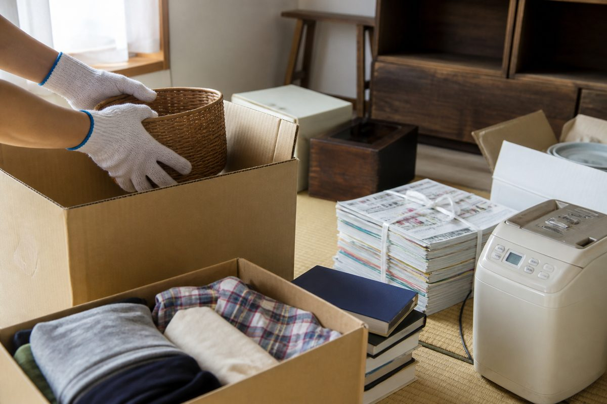

壊れた家電も大きな家具も、
まとめて片付けます。
壊れた冷蔵庫、使わない家具、大量の本や雑誌のまとめて処分まで。お部屋をスッキリきれいに整え、快適な暮らしをお手伝いします。

こんなお悩み、ありませんか？
- 壊れた大きな冷蔵庫を処分したいけれど、重くて運び出せない…
- 長年使わなくなったタンスやベッドなどの大きな家具をすっきり捨てたい…
- 本棚に溜まった大量の本や雑誌、不要な書類などをまとめて片付けたい…
そんなお悩みは、地域密着の便利屋「とよサポ」にお任せください。お客様が分別や荷造りをする必要は一切ありません。
重たい大型の不用品搬出から、細々とした古紙やゴミの仕分け・袋詰め、さらには家電リサイクル法対象の適正な処分まで、すべて一括でまごころを込めて対応いたします。
とよサポの片付けサービス 2つの特長
家電・家具から大量の本・雑誌まで、
まとめて搬出・処分
- 壊れた冷蔵庫、洗濯機、テレビなどの大きな家電を安全に処分したい方
- 使わなくなった古いタンス、ソファ、ベッドなどを捨てて部屋を広げたい方
- 押入れや本棚に眠る大量の本、雑誌、ダンボールなどを一掃したい方
力仕事も面倒な仕分けも、すべてスタッフが代行します。「不用品を処分したいけれど、ゴミの分別や袋詰めを自分でするのが面倒できつい…」という場合でもご安心ください。とよサポのスタッフが現場へお伺いし、面倒な仕分けや袋詰め作業、結束作業からスタートします。お客様は見ているだけで大丈夫です。
自力では動かせない大型家電や家具もスムーズに搬出。壊れて動かなくなった冷蔵庫や、使わなくなって場所をとっている大型の家具（クローゼット、ダイニングテーブルなど）は、搬出するだけでも大仕事です。力仕事に慣れたスタッフが、住まいを傷つけないよう壁や床をしっかり養生した上で、速やかに屋外へ運び出し、適切に回収・処分を行います。
家電リサイクル法に完全適正対応。
安心・安全の回収処分
- リサイクルが必要な対象製品の処分手続きが分からなくてお困りの方
- 不法投棄などの違法業者を避け、ルールに則って正しく安全に処分したい方
- リサイクル料金の見積もりを明瞭に提示してほしい方
法律を守り、クリーンで適正な処分をお約束。一部の家電製品（冷蔵庫、テレビ、洗濯機、エアコンなど）は、国の定める「家電リサイクル法」に基づき、適正に処分することが法律で義務付けられています。とよサポでは、適正な処分フローに従い、安全かつ確実に処分を代行しますので不法投棄といった違法行為のリスクがなく、非常に安心です。
家電リサイクル券の購入と、明瞭なお見積り。対象家電の引き取り・処分には、適正な「家電リサイクル券」の購入が必要となります。家電リサイクル料金は、メーカーや機種、サイズ（容量等）によって正確な金額が細かく分かれております。そのため、とよサポでは事前に処分対象となる家電のメーカーや型番などを確認した上で、クリアで誤解のない個別お見積りをご提示いたします。
料金のご案内
家電リサイクル対象製品（冷蔵庫・テレビ等）について
※冷蔵庫、冷凍庫、テレビ（ブラウン管・液晶・プラズマ）、洗濯機、衣類乾燥機、エアコン等の回収処分には、法律に基づく「家電リサイクル券」の購入が別途必須となります。
※家電リサイクル料金は、メーカーや機種（容量・サイズ等）によって異なるため、個別に対象品を確認した上で別途お見積りとなります。
※不用品の総量や搬出経路（階段作業の有無など）によって正確な総額料金を計算します。
※お見積りは無料ですので、まずはお気軽にご相談ください。
※現地調査が必要な場合は3,300円（税込）がかかります。ただしご成約の場合は費用は発生いたしません。
※下関市内は出張費（エリア料金）無料です。 その他の詳しい料金表を見る
ご利用の流れ
- 1
お問い合わせ
お電話またはLINEにて、「壊れた冷蔵庫を捨てたい」「部屋を片付けてほしい」などとお伝えください。処分したい物の種類や量をお聞きします。
- 2
現地確認・お見積り
スタッフがお伺いし、不用品の総量や家電製品の型番、搬出経路を確認した上で、正確で分かりやすいお見積りをご提示します（お見積りは無料ですが、現地調査が必要な場合は3,300円がかかります。ただしご成約の場合は費用は発生いたしません）。
- 3
丁寧・スピーディーな作業
お見積りに納得いただけましたら作業日程を決定し、仕分け・袋詰めから養生、大型不用品の安全な運び出しまで、プロが手際よく安全に作業を行います。
- 4
お部屋のご確認・お支払い
不用品の搬出が終わり、お部屋がすっきり片付いた状態をご確認いただき、問題がなければお支払いとなります。
写真を送るだけで、おおよその金額をお伝えします
処分したい物やお部屋の写真をLINEで送ってください。相談だけでも大歓迎です。